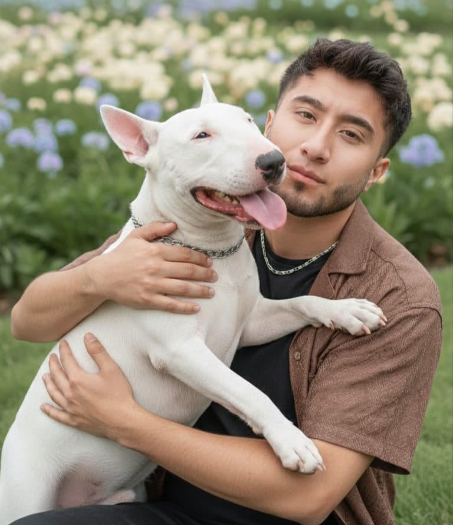

Más que un amigo, una parte de mi vida
Conoce la historia de mi primer amigo de cuatro patas, alguien muy especial para mi que dejó una huella para siempre...
Leer masCompartiendo experiencias, aprendizajes y hobbies favoritos

¡Hola! Soy Joffre Chacán y te doy la bienvenida a mi espacio personal en la web, un lugar donde podrás conocer un poco más sobre mi mundo.
A lo largo de mis 23 años he recorrido un camino lleno de aprendizajes, experiencias y momentos que me han ayudado a crecer tanto en lo personal como en lo profesional.
En este blog comparto parte de ese recorrido: mi formación académica, mis hobbies y algunas experiencias personales que han marcado mi vida.
Aquí encontrarás contenido que reflejan mis intereses y mi forma de ver las cosas, siempre desde una perspectiva auténtica, sencilla y cercana.
Conoce la historia de mi primer amigo de cuatro patas, alguien muy especial para mi que dejó una huella para siempre...
Leer mas
Descubre cómo cada etapa de mis estudios fue marcando mi camino, impulsándome a seguir aprendiendo y superando nuevos retos...
Leer masEn mi tiempo libre disfruto realizar actividades que me relajan y me inspiran, como viajar, escuchar música, hacer deporte y muchas cosas más...
Leer mas